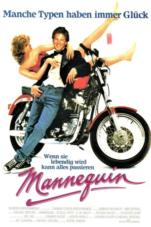

#10169 Mannequin
Auszeichnungen: für 1 Oscars nominiert
 
 IMDB-Wertung: 5.8 / 10
IMDB-Wertung: 5.8 / 10  Tomatometer: 19
Tomatometer: 19  Metascore: 21
Metascore: 21 
Jonathan Switcher ist vom Glück nicht gerade verfolgt: Eigentlich zum Künstler berufen, macht ihm das wirkliche Leben ziemlich viel Ärger. Ständig ist er auf der Suche nach einem Job, der nicht ganz so mies war wie der vorherige, um sich über Wasser zu halten. Doch das Blatt wendet sich in Gestalt einer älteren Dame die ihm einen Job in ihrem Kaufhaus verschafft, wo auch gleich eine ausgestellte Schaufensterpuppe seine Aufmerksamkeit fesselt. Mit perfekten Formen ausgestattet, entpuppt sich die Gestalt aus Fiberglas als lebendes Wesen namens Emmy die zwar schon 4000 Jahre alt ist und aus Ägypten stammt, aber für Jonathan zur Glücksfee wird. Mit Emmys Hilfe steigt er zum erfolgreichen Schaufensterdekorateur auf, und sie könnten glücklich und verliebt bis an ihr Ende leben, wären da nicht die neidischen Kollegen, die Jonathan aus dem Weg räumen wollen …
Jahr: 1987
Dauer: 86 Minuten
FSK: 6
Land: USA Studio: Twentieth Century FoxTonspuren:
Untertitel:
Auflösung: 1080p (1920x1040) Größe: 7833 MB
Genre: Komödie, Fantasy, Liebe
Regisseur: Michael Gottlieb
Drehbuch: Edward Rugoff, Michael Gottlieb
Soundtrack: Sylvester Levay
Darsteller:
- Andrew McCarthy als Jonathan Switcher
- Kim Cattrall als Emmy
- Estelle Getty als Claire Timkin
 James Spader als Richards
James Spader als Richards G.W. Bailey als Felix
G.W. Bailey als Felix- Carole Davis als Roxie
 Steve Vinovich als B.J. Wert
Steve Vinovich als B.J. Wert- Meshach Taylor als Hollywood
- Phyllis Newman als Emmy's Mother
- Pat Ryan als Pizzeria Manager
- Olivia Frances Williams als Woman in Boardroom
- Ben Hammer als Hans the Maitre d'
- Lara Harris als Mannequin in Photo Window
- Andrew Hill Newman als Compactor Room Janitor
- Constance Baranzano als Illustra Executive (uncredited)
- Christopher Maher als Armand
- Phil Rubenstein als Mannequin Factory Boss
- Jeffrey Lampert als Factory Worker
- Kenneth Lloyd als Superdad
- Jake Jundef als Superkid
- Harvey Levine als Balloon Boss
- Thomas J. McCarthy als Head Gardener
- Glenn Davish als Effete Executive
- Steve Lippe als Male Sales Clerk
- Lee Golden als Wino
- Vernon R. DeVinney als Older Man in Boardroom
- Charles Lord als Man in Boardroom
- Jane Moore als Tina
- Jane Carol Simms als Lupe
- Judi Goldhand als Mrs. Thomas
- Dan Lounsbery als Senior Citizen
- Kitty Minehart als Senior Citizen
- Katherine Conklin als Wert's Secretary
- Bill Greene als Police Officer
- Nancy Kirk als Shopper (uncredited)
- Fred J. Lauver als Pursuing Guard on Stairs (uncredited)
Datei: X:\1987\Mannequin (1987, FSK6, 1920x1040).mkv seit 13.12.2018
Festplatte: HD 1987-1991
 Es gibt insgesamt 50 Filme in der Gruppe '1987'
Es gibt insgesamt 50 Filme in der Gruppe '1987'